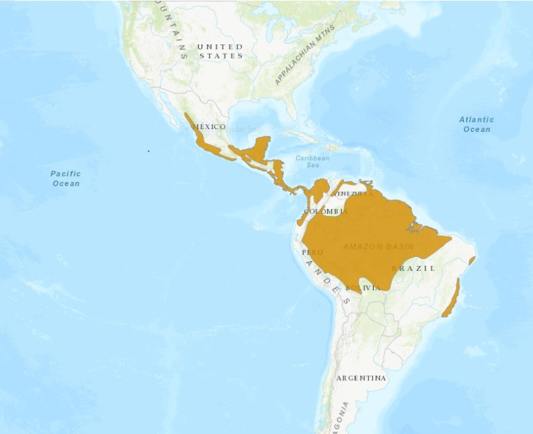

Análisis del canto de Attila spadiceus en cinco sectores de su distribución geográfica.
En temas de biología evolutiva, el reconocimiento de variaciones en el comportamiento de la misma especie relacionado a su distribución geográfica ha sido de alto interés de estudio por científicos para explicar procesos de especiación (Podos & Warren, 2007). En aves, el canto es una de las características más estudiadas en la actualidad, siendo un comportamiento aprendido de uso rutinario asociado a su entorno que podría tener componentes variables, incluso entre poblaciones de la misma región (Sober, Wohlgemuth & Brainard, 2008).
Attila spadiceus es también conocida como “Bright-Rumped” en inglés, se caracteriza por presentar diferentes coloraciones en su plumaje, siendo considerado como un pájaro polimórfico. Además, tiene bastante plasticidad en los ecosistemas en que se encuentra, frecuenta bosques secos y húmedos, claros sombreados y jardines cercanos a los bosques, se reporta en área de bajura hasta aproximadamente los 1850 msnm.

Es un ave bulliciosa, con bastante actividad de movimiento entre los árboles y el suelo (Stiller & Skutch, 2007). Según reporta BirdLife International (2017), esta especie cuenta con una población estable con un estado de menor preocupación, con respecto a la conservación de de la misma. Attila spadiceus (Gmelin, JF, 1789) es un ave de distribución Neotropical, se ubica desde el noroeste de México hasta el sureste de Brasil y el oeste de Bolivia y Ecuador (Garrigues & Dean, 2014). Siendo un ave con amplia distribución, este informe pretende reportar diferencias entre países a partir de la comparación los valores obtenidos de las métricas características del canto como la frecuencia, poder y energía.

Figura 2. Distribución geográfica de la especie Attila spadiceus. Fuente: Tomado de BirdLife International (2017).